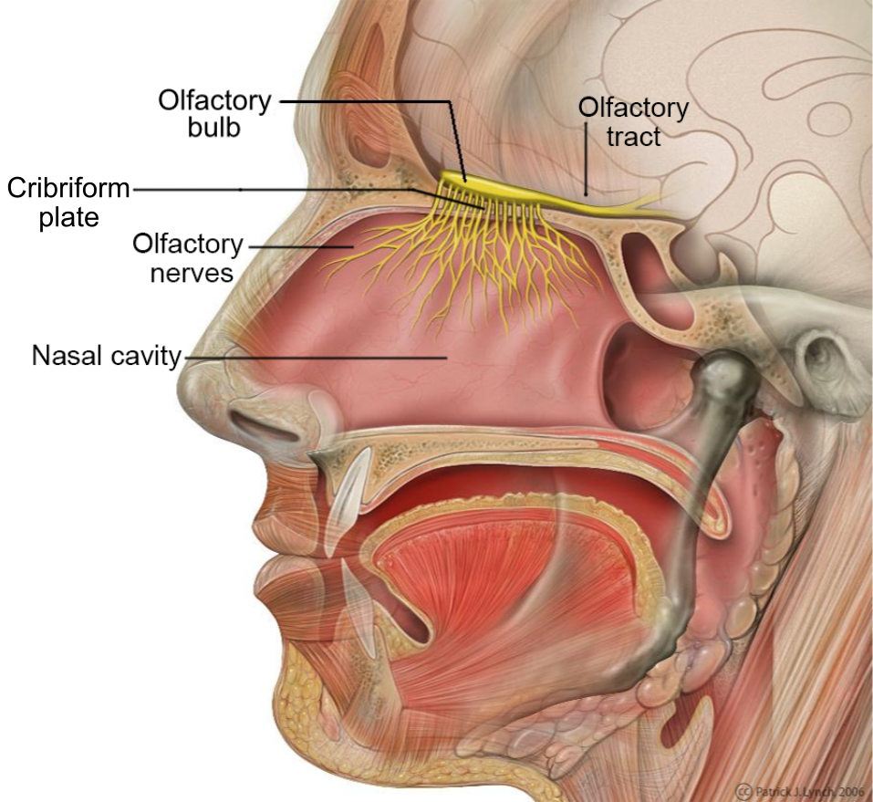
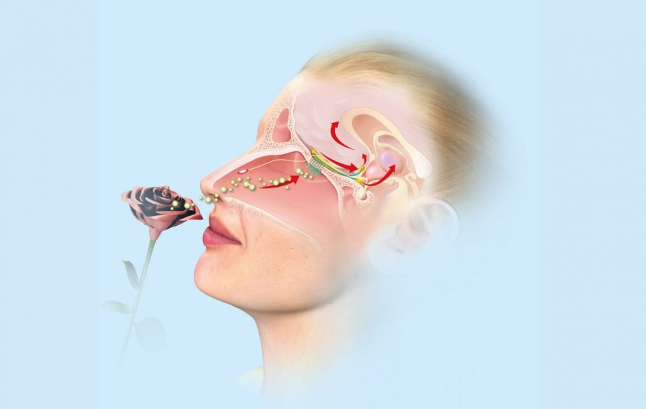
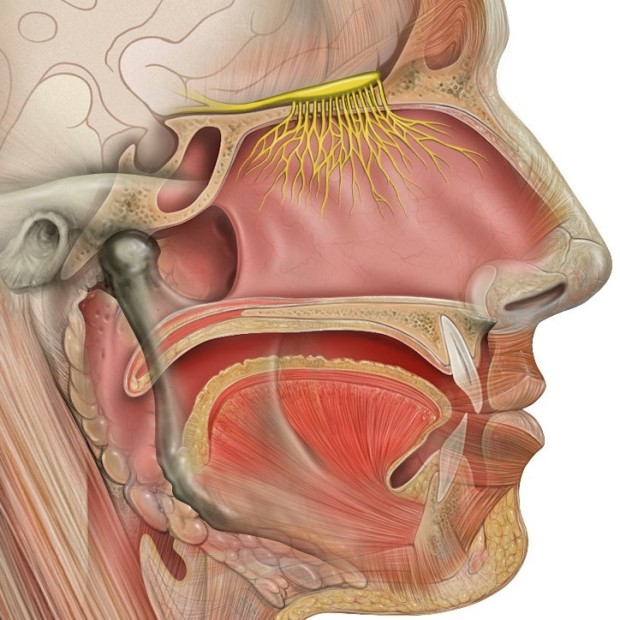

Miris osećamo kada neka hemijska materija dolazi u dodir sa završecima određenih živaca.
Ova materija mora da bude u obliku gasa ili pare, inače ne bi mogla da putuje kroz vazduh.
Da bi nešto imalo miris, mora da ima molekule.
Procenjuje se da postoji 40 milijardi molekula koji mogu da imaju miris.
Ćelije čula mirisa nalaze se u sluzokoži nosa.
One zauzimaju veoma malo područje u gornjem delu nosnih šupljina i postavljene su tako da prilikom disanja vazduh struji preko njih.
Da bi nam nešto zamirisalo, ono mora da bude isparljivo, odnosno u pokretu, ili nam miris mora doneti neka materija koja je u pokretu.
Kada miris dospe u određeno područje u nosu, on izaziva živčanu struju koja putuje do mozga gde se miris prepoznaje.
Mirisi takođe mogu da probude uspomene, kao što je mirisanje parfema koji nas natera da pomislite na osobu koja ga je nosila ili aroma kuvane hrane koja nas podseća na našu baku.
Ovi „mirisni flešbekovi” dešavaju se zato što je centar za obradu mirisa u mozgu povezan sa njegovim centrom emocija i pamćenja.
Studija sa jezuitskog univerziteta Wheeling u Zapadnoj Virdžiniji otkrila je da miris cimeta poboljšava funkciju mozga i radnu memoriju, što bi moglo da nam pomogne u lečenju demencije.
  